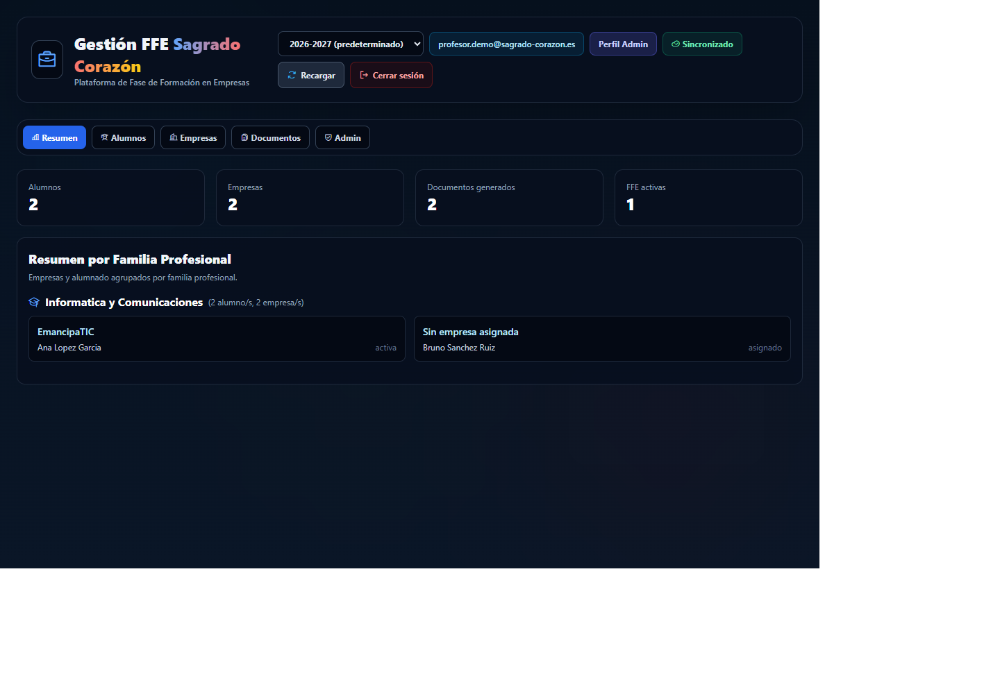
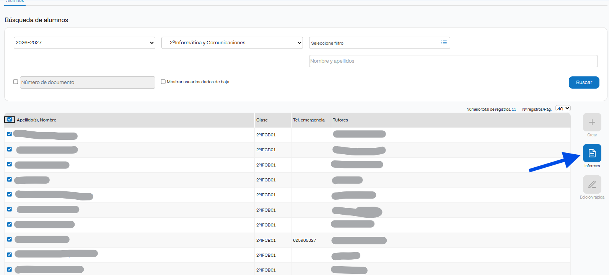
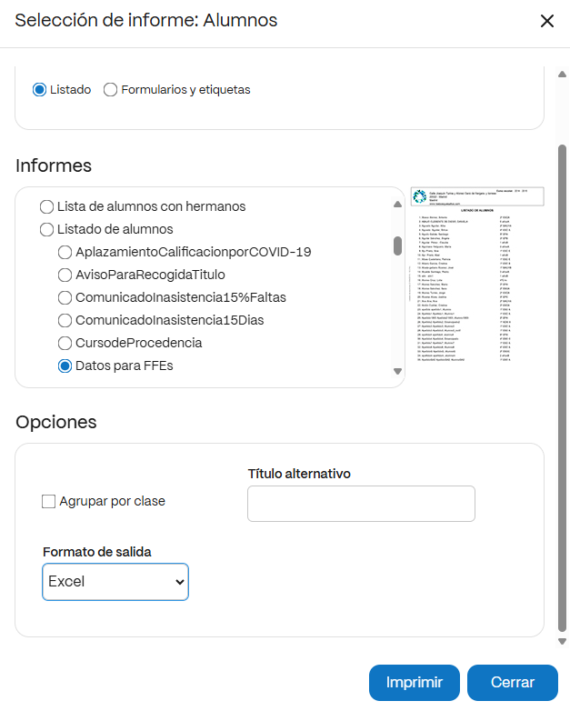
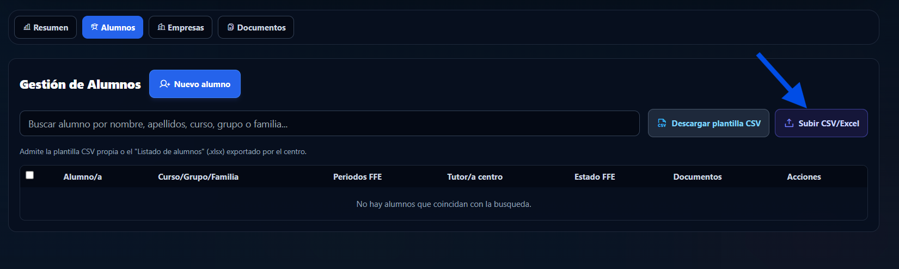
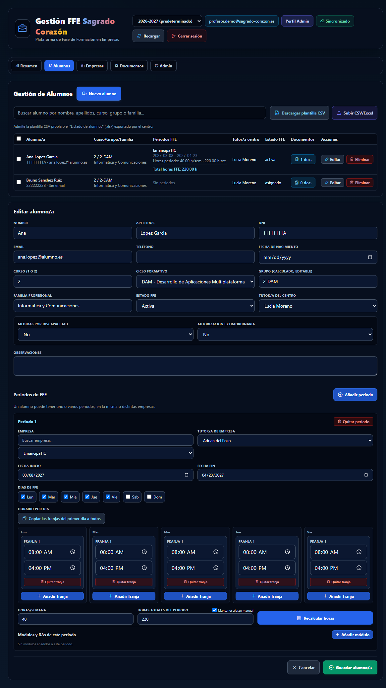
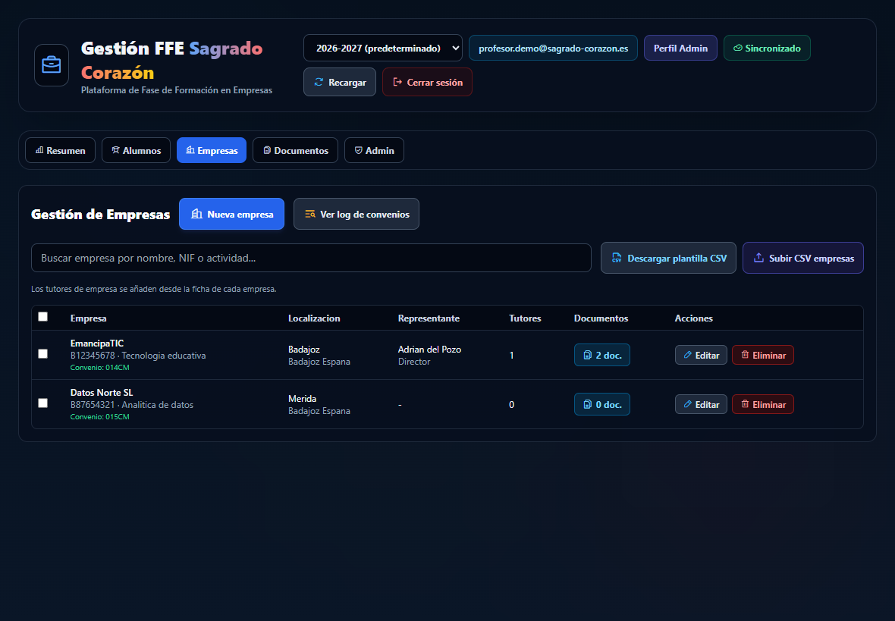
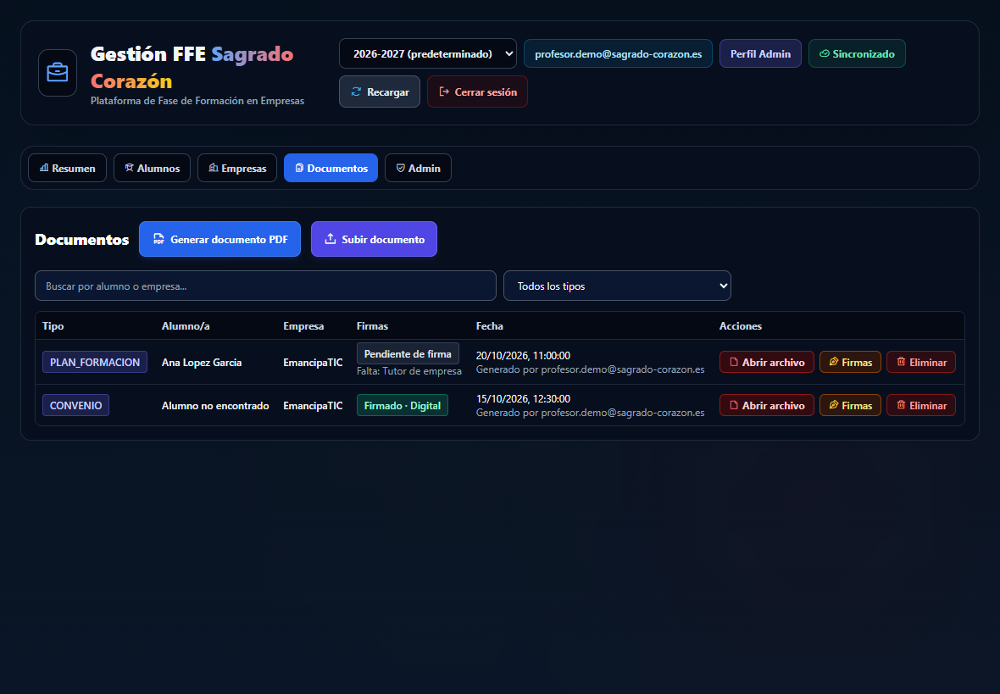
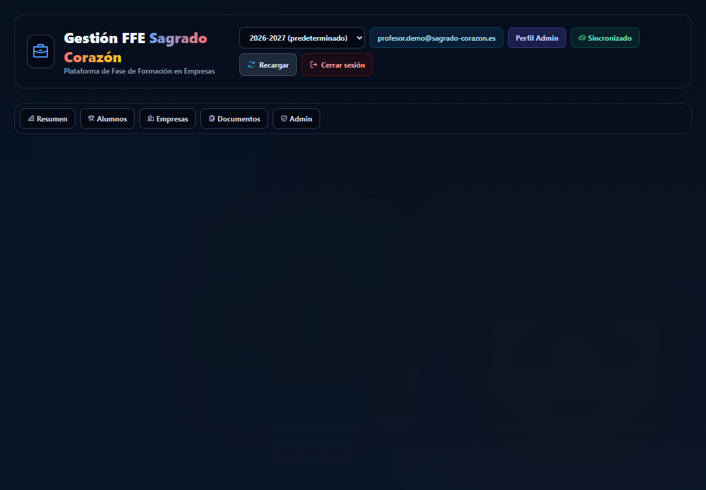

Sagrado Corazón
Manual de usuario
Gestión FFE
Guía operativa para el profesorado: alumnado, empresas, períodos de formación, documentación y administración autorizada.
Índice
1. Acceso y navegación
Profesorado autorizado Acceda con una cuenta institucional de @sagrado-corazon.es. La plataforma carga la información del curso académico seleccionado.
- Abra la dirección de la aplicación y pulse Iniciar sesión con Google.
- Seleccione su cuenta institucional. Si no tiene acceso, solicite al administrador que incluya su correo en la lista de profesorado autorizado.
- Use el selector de la cabecera para trabajar con un curso concreto o ver todos los cursos.
- Pulse Recargar tras cambios efectuados por otra persona. El indicador Sincronizado confirma que la última carga terminó correctamente.
- Pulse Cerrar sesión al finalizar, especialmente en equipos compartidos.
2. Resumen
Profesorado autorizado La pantalla inicial concentra los indicadores de seguimiento: alumnado, empresas, documentos generados y FFE activas. Debajo se agrupan el alumnado y las empresas por familia profesional.

Use esta vista para localizar rápidamente una familia profesional, comprobar quién está sin empresa asignada y contrastar el volumen de documentación antes de generar o importar información.
3. Gestión de alumnado
3.1 Consultar, buscar y editar
Profesorado autorizado En Alumnos, el buscador encuentra coincidencias por nombre, apellidos, curso, grupo o familia profesional.
- Escriba el criterio de búsqueda o filtre por curso académico en la cabecera.
- Pulse Nuevo alumno para crear una ficha o Editar en la fila correspondiente.
- Complete identificación, contacto, curso, estudio, grupo, familia profesional, estado FFE y tutor/a de centro.
- Introduzca las observaciones o las autorizaciones de discapacidad/extraordinaria cuando proceda.
- Pulse Guardar alumno. Para descartar cambios, use Cancelar.
3.2 Importar alumnado y descargar plantilla
Profesorado autorizado La sección permite descargar una plantilla CSV y cargar ficheros CSV/XLSX, incluido el formato de exportación del centro.
Opción 1:
- Entre en su cuenta de Educamos.
- Pinche en Datos>>Usuarios
- Seleccione el nivel educativo del alumnado que desea gestionar. Pinche en "Buscar"
- Marque a todo el alumnado que desee gestionar y pinche en "Informes"

Cómo marcar alumnado en Educamos y botón de Informes. - Busque en el listado de informes "Datos para FFEs", selecciones "Excel" como formato de salida y pulse "imprimir".

Seleccionar datos y formato de salida para FFEs en Educamos. - En la APP de gestiión de FFEs pinche en "Subir CSV/Excel"

Subir el archivo generado por Educamos - Si la carga se realiza de forma exitosa, el sistema mostrará un mensaje de confirmación y le aparecerán los alumnos cargados.
Opción 2:
- Pulse Descargar plantilla CSV.
- Rellene una fila por alumno sin cambiar los encabezados.
- Pulse Subir CSV/XLSX y seleccione el archivo.
- Revise el resultado de importación. Si hay filas inválidas, descargue el archivo de errores, corrija solo esas filas y repita la carga.
La ficha individual sirve para realizar correcciones posteriores sin tener que repetir una importación completa.
3.3 Acciones masivas
Profesorado autorizado Marque las casillas de las filas para aplicar cambios comunes: curso, estudio, familia profesional, estado FFE, tutor/a de centro y curso académico. Confirme la operación en el panel de edición masiva.
También puede copiar módulos y resultados de aprendizaje (RA) desde un alumno y período de origen a los alumnos seleccionados. Seleccione primero el alumnado destinatario, elija el origen y confirme la copia.
Solo administración La eliminación masiva de alumnos requiere permisos de administración.
4. Períodos, horario y resultados
Profesorado autorizado Cada ficha de alumno puede contener uno o varios períodos de FFE. En cada período se relacionan empresa, tutor/a de empresa, fechas, días, franjas horarias, horas y módulos.

4.1 Crear o modificar un período
- Abra la ficha del alumno y pulse Añadir período si todavía no existe.
- Busque y seleccione la empresa. A continuación seleccione el tutor o tutora de empresa disponible.
- Indique fecha de inicio y fin.
- Marque los días de asistencia y añada una o varias franjas por día. Puede copiar el horario del primer día configurado a los días seleccionados.
- Revise las Horas/semana calculadas.
- Guarde la ficha completa del alumno.
4.2 Horas totales del período
La aplicación calcula las horas totales considerando las fechas, el horario y el calendario lectivo configurado. Cuando deba establecer una cifra distinta:
- Escriba el valor correcto en Horas totales del período.
- Active Mantener ajuste manual. Al editar el campo, este ajuste se activa automáticamente.
- Guarde el alumno. El valor manual permanece al guardar y en los recálculos de calendario.
- Use Recalcular horas solo cuando quiera volver al cálculo automático; esta acción elimina el ajuste manual.
4.3 Módulos y resultados de aprendizaje
- En el período, pulse Añadir módulo.
- Indique módulo, código, horas y modalidad: Completo en empresa o Compartido centro/empresa.
- Añada los RA previstos, su descripción y, cuando corresponda, la ponderación.
- Guarde la ficha. Para reutilizar la estructura en otros alumnos, utilice la copia masiva de módulos y RA.
5. Gestión de empresas
Profesorado autorizado La pestaña Empresas muestra identidad, NIF, actividad, localización, representante, número de tutores, documentos vinculados y acciones disponibles.

5.1 Alta y edición de empresa
- Pulse Nueva empresa o Editar.
- Complete nombre, NIF, actividad, base legal, número de convenio, ubicación, representante y observaciones.
- En la sección de tutores de empresa, pulse Añadir tutor y complete al menos nombre, apellidos y correo cuando estén disponibles. Se admiten varios tutores.
- Guarde. La empresa quedará disponible en los selectores de períodos y documentos.
5.2 Importación y acciones masivas
- Pulse Descargar plantilla CSV. La plantilla incluye todos los campos y espacio para dos tutores de empresa.
- Para el identificador de convenio, escriba el número de convenio en la columna correspondiente.
- Use Subir CSV empresas para importar el archivo.
- Si alguna fila no se incorpora, descargue el informe de errores, corríjala y vuelva a cargarla.
- Marque varias empresas para actualizarlas de forma masiva. Solo administración puede eliminarlas masivamente.
El botón Ver log de convenios descarga el listado de números de convenio. Desde cada empresa puede acceder a sus documentos mediante el contador doc..
Solo administración Si la lista de empresas aparece vacía por una incidencia de almacenamiento, está disponible la recuperación desde la papelera de Drive.
6. Documentos y firmas
Profesorado autorizado En Documentos se generan PDFs desde plantillas, se suben archivos existentes y se controla la firma. El buscador filtra por alumno o empresa y el desplegable limita por tipo.

6.1 Generar un PDF desde una plantilla
- Pulse Generar documento PDF.
- Seleccione el tipo de documento configurado.
- Seleccione el ámbito solicitado: alumno, empresa o grupo, según la plantilla.
- Revise el destino y confirme la generación.
- Abra el resultado desde Abrir archivo. Quedará registrado automáticamente en la tabla.
6.2 Subir un documento existente
- Pulse Subir documento.
- Seleccione un tipo existente o cree un tipo cuando tenga permiso de administración.
- Vincule el archivo a un alumno, una empresa o a ambos; para un documento grupal puede vincular varios alumnos.
- Seleccione el archivo y confirme la subida.
6.3 Firmas, sustitución y eliminación
- Pulse Firmas en la fila del documento.
- Indique estado, método de firma y firmantes pendientes. Guarde la actualización.
- Cuando reciba el documento firmado, use la opción de reemplazar para conservar el registro y sustituir el archivo por la copia firmada.
- Para retirar un documento, pulse Eliminar y confirme. El registro desaparece y el archivo se envía a la papelera de Drive.
6.4 Exportar documentos de una entidad
Entre desde el contador de documentos de un alumno o empresa. Seleccione los archivos y use la descarga: se genera un ZIP o, cuando todos los elementos son PDF, un PDF combinado. El límite de tamaño conjunto es 20 MB.
7. Administración autorizada
Solo administración Esta pestaña se usa para preparar el curso y mantener los datos maestros. Los cambios afectan a la disponibilidad de opciones para el resto del profesorado.

7.1 Accesos y tutores de centro
- En Acceso profesorado, añada o retire cuentas institucionales autorizadas.
- En Tutores de centro, cree, edite o elimine los tutores que aparecerán en las fichas del alumnado.
7.2 Cursos académicos y estudios
- En Cursos académicos, cree un curso, renómbrelo, márquelo como predeterminado o clone la configuración de otro curso.
- En Estudios/Ciclos, mantenga código, nombre, grado y régimen. Estos datos alimentan los selectores de las fichas.
7.3 Calendario lectivo
- Seleccione el curso académico.
- Defina inicio y fin del curso.
- Marque los días no lectivos, incluidos festivos y fines de semana que no deban computar.
- Guarde los cambios. Los períodos automáticos se recalculan respetando los que tengan Mantener ajuste manual activo.
7.4 Datos del centro, tipos y plantillas
- Complete los datos globales del centro que utilizan los documentos.
- Configure la carpeta de salida de PDFs y las carpetas por tipo documental.
- Cree los tipos de documento necesarios.
- Para cada plantilla de Google Docs, indique su identificador, ámbito (alumno, empresa o grupo), patrón de nombre y carpeta de salida.
- Utilice la detección de marcadores para comprobar los campos disponibles antes de generar documentos.
8. Incidencias habituales
| Situación | Actuación recomendada |
|---|---|
| No puedo iniciar sesión. | Compruebe que usa una cuenta @sagrado-corazon.es. Si persiste, pida al administrador que revise su autorización. |
| No aparece una empresa en un período. | Revise que la empresa esté dada de alta y no eliminada; después pulse Recargar. |
| Una importación deja filas fuera. | Descargue el archivo de errores, corrija los datos indicados y vuelva a importar las filas afectadas. |
| Las horas totales cambian. | Compruebe fechas, días y franjas. Si el total debe ser excepcional, introdúzcalo y active Mantener ajuste manual. |
| No veo la pestaña Admin. | Es normal para profesorado no administrador. Solicite el permiso solo si debe gestionar datos maestros. |
| Se eliminó un documento por error. | El archivo se traslada a la papelera de Drive. Restaúrelo allí y vuelva a subirlo para recuperarlo en el registro. |
9. Lista de comprobación antes del inicio de FFE
- El curso académico y el calendario lectivo están configurados.
- El alumnado tiene estudio, grupo, tutor/a de centro y estado FFE actualizados.
- Cada período tiene empresa, tutor/a de empresa, fechas, días y horarios correctos.
- Las horas totales se han revisado; los ajustes excepcionales están marcados como manuales.
- Los módulos y RA están registrados o copiados desde una ficha verificada.
- La empresa tiene número de convenio, representante y tutores actualizados.
- Las plantillas y datos del centro están revisados antes de generar PDFs.
- Los documentos pendientes de firma están identificados y los firmados sustituidos por su copia definitiva.
Nota sobre edición: este documento está marcado como editable para adaptar los procedimientos internos, añadir capturas posteriores o incluir datos de contacto. Mantenga las capturas y sus pies actualizados cuando cambie la interfaz.